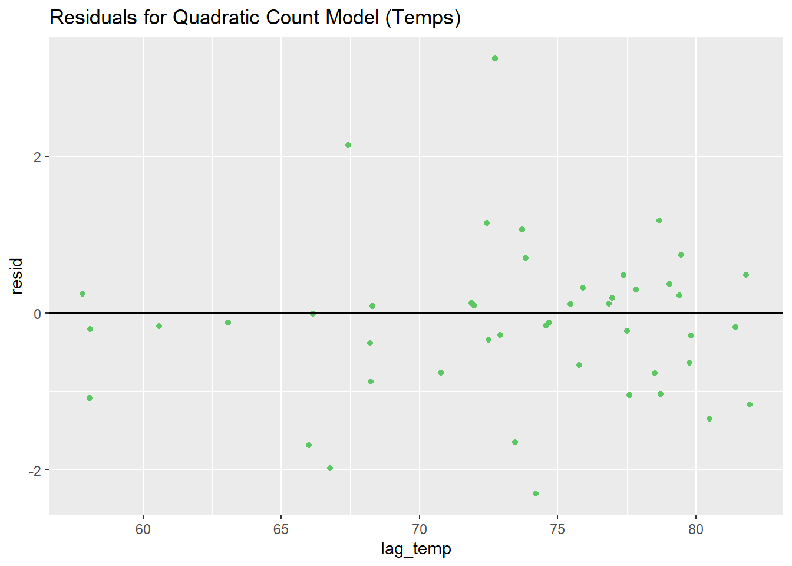

Regression Models
In this section, we show our model building process. We start with an uninformative month-based model and move to a more granular autoregressive model with temperature effects.
Data import
First, we need to import our WNV data and predictor data. Ultimately, we are only modeling WNV+ mosquitoes, so we are actually just using the mosquito data and the weather data to predict WNV+ mosquito counts. Since Heat Vulnerability Index (HVI) is a quantitative proxy for human vulnerability to extreme heat and heatstroke, we do not hypothesize it to be causally relevant. This is supported by the lack of association between HVI and WNV+ mosquito count.
wnv_cases <- read_csv("cleaned_data/wnv_cases.csv")
wnv_mosquitoes <- read_csv("cleaned_data/wnv_mosquitoes.csv")
heat_vuln <- read_csv("cleaned_data/heat_vuln.csv")
day_weather <- read_csv("cleaned_data/day_weather.csv")Model with year
This is the simplest model, predicting counts of WNV+ mosquitoes
using year. Using our mosquito count data, we want to get counts per
year to model from. As such, we mutate to create a year
variable based on the date variable, group_by year, and
calculate the count for each year.
mosq_count_by_year <-
wnv_mosquitoes |>
mutate(year = lubridate::year(date)) |>
group_by(year) |>
summarise(count = n())
mosq_count_by_year |>
knitr::kable(col.names = c("Year", "Count of WNV+ mosquitoes")) | Year | Count of WNV+ mosquitoes |
|---|---|
| 2021 | 732 |
| 2022 | 789 |
| 2023 | 711 |
| 2024 | 692 |
fit1 <- glm(count ~ year, mosq_count_by_year, family = "poisson")
fit1 |>
tidy() |>
knitr::kable(
digits = 4,
col.names = c("Term", "Estimate", "Standard error", "Tes statistic", "p value")
)| Term | Estimate | Standard error | Tes statistic | p value |
|---|---|---|---|---|
| (Intercept) | 61.3872 | 33.4636 | 1.8344 | 0.0666 |
| year | -0.0271 | 0.0165 | -1.6374 | 0.1016 |
fit1 |>
glance() |>
knitr::kable(
digits = 4,
col.names = c("Null deviance", "Null df", "Log likelihood", "AIC", "BIC", "Deviance", "Residual df", "Number of observations")
)| Null deviance | Null df | Log likelihood | AIC | BIC | Deviance | Residual df | Number of observations |
|---|---|---|---|---|---|---|---|
| 7.1572 | 3 | -19.1003 | 42.2006 | 40.9732 | 4.4754 | 2 | 4 |
Since we are modeling counts of WNV+ mosquitoes, viable models for count data would be a Poisson regression or negative binomial regression. Our first initial model is a Poisson regression predicting counts of mosquitoes using year alone.
As expected, year does not really predict count much, with an estimated -0.0271 count of mosquitoes for each additional year. The parameter is also not significant at the 0.05 level, with a p value of 0.1016.
Model with month
As for the simple model using year, we want to get counts of
mosquitoes but per month this time instead of year. We create a month
variable using mutate, and group_by is used
again to calculate counts of mosquitoes per month.
mosq_count_by_month <-
wnv_mosquitoes |>
mutate(month = lubridate::month(date)) |>
group_by(month) |>
summarise(count = n())
mosq_count_by_month |>
knitr::kable(col.names = c("Month", "Count of WNV+ mosquitoes"))| Month | Count of WNV+ mosquitoes |
|---|---|
| 6 | 48 |
| 7 | 692 |
| 8 | 1282 |
| 9 | 782 |
| 10 | 120 |
mosq_count_by_month |>
ggplot(aes(x = month, y = count)) +
geom_bar(stat = "identity", fill = "#440154FF") +
guides(
fill = "none"
)
As shown on the table, the bulk of the counts are in the middle of summer in August, with 1282 mosquitoes, tapering off towards the beginning and end in June and October. The start of data collection in June has the least number of WNV+ mosquitoes with 48. When plotted, the distribution is also approximately normal.
fit2 <- glm(count ~ month, mosq_count_by_month, family = "poisson")
fit2 |>
tidy() |>
knitr::kable(
digits = 4,
col.names = c("Term", "Estimate", "Standard error", "Test statistic", "p value")
)| Term | Estimate | Standard error | Test statistic | p value |
|---|---|---|---|---|
| (Intercept) | 6.0493 | 0.1074 | 56.3390 | 0.0000 |
| month | 0.0400 | 0.0131 | 3.0589 | 0.0022 |
fit2 |>
glance() |>
knitr::kable(
digits = 4,
col.names = c("Null deviance", "Null df", "Log likelihood", "AIC", "BIC", "Deviance", "Residual df", "Number of observations")
)| Null deviance | Null df | Log likelihood | AIC | BIC | Deviance | Residual df | Number of observations |
|---|---|---|---|---|---|---|---|
| 2079.812 | 4 | -1054.328 | 2112.656 | 2111.875 | 2070.445 | 3 | 5 |
Our second model modeling mosquito count predicted by month only has a significant regression parameter of 0.04 mosquitoes for every increase by 1 month, with a p value of 0.0022.
mosq_count_by_month |>
cbind(pred = predict(fit2, type = "response")) |>
ggplot(aes(x = month, y = count)) +
geom_point(color = "#404688FF", alpha = 0.5) +
geom_line(aes(y = pred), size = 0.6)
However, despite a significant model, the model does not fit our dataset well, so it is not useful in predicting counts. When plotting the predicted values against the observed values, the predicted values are linear since model is represented as a linear term, while our observed counts are parabolic.
fit3 <- glm(count ~ month + I(month^2), mosq_count_by_month, family = "poisson")
fit3 |>
tidy() |>
knitr::kable(
digits = 4,
col.names = c("Term", "Estimate", "Standard error", "Test statistic", "p value")
)| Term | Estimate | Standard error | Test statistic | p value |
|---|---|---|---|---|
| (Intercept) | -36.5164 | 1.2301 | -29.6863 | 0 |
| month | 10.8205 | 0.3058 | 35.3854 | 0 |
| I(month^2) | -0.6694 | 0.0189 | -35.4324 | 0 |
fit3 |>
glance() |>
knitr::kable(
digits = 4,
col.names = c("Null deviance", "Null df", "Log likelihood", "AIC", "BIC", "Deviance", "Residual df", "Number of observations")
)| Null deviance | Null df | Log likelihood | AIC | BIC | Deviance | Residual df | Number of observations |
|---|---|---|---|---|---|---|---|
| 2079.812 | 4 | -30.4953 | 66.9907 | 65.819 | 22.7796 | 2 | 5 |
With this model, both linear and second order terms are significant predictors of mosquito counts, with p values of 0 and 0, respectively.
mosq_count_by_month |>
cbind(pred = predict(fit3, type = "response")) |>
ggplot(aes(x = month, y = count)) +
geom_point(alpha = 0.5, size = 2) +
geom_line(aes(y = pred), color = "#3B528BFF", size = 0.6)
With an included second order term for month, our predicted values better fit the observed values, depicting the parabolic shape of the data.
Model with month and year
Now that we are predicting both month and year, we want to get counts
per each combination of month and year. We mutate to create
month and year variables again, group_by month and year
both this time, and get the mosquito counts per each combination as
follows.
mosq_month_year <-
wnv_mosquitoes |>
mutate(month = lubridate::month(date),
year = lubridate::year(date)) |>
group_by(year, month) |>
summarise(count = n())
mosq_month_year |>
knitr::kable(col.names = c("Year", "Month", "Count of WNV+ mosquitoes"))| Year | Month | Count of WNV+ mosquitoes |
|---|---|---|
| 2021 | 6 | 4 |
| 2021 | 7 | 162 |
| 2021 | 8 | 303 |
| 2021 | 9 | 200 |
| 2021 | 10 | 63 |
| 2022 | 6 | 8 |
| 2022 | 7 | 109 |
| 2022 | 8 | 358 |
| 2022 | 9 | 293 |
| 2022 | 10 | 21 |
| 2023 | 7 | 72 |
| 2023 | 8 | 342 |
| 2023 | 9 | 262 |
| 2023 | 10 | 35 |
| 2024 | 6 | 36 |
| 2024 | 7 | 349 |
| 2024 | 8 | 279 |
| 2024 | 9 | 27 |
| 2024 | 10 | 1 |
To determine whether year is a significant additional predictor to a model that already has linear and second order terms for month, we created a Poisson model with just the two month terms and one with both month terms and year as a predictor.
fit3.5 <- glm(count ~ month + I(month^2), mosq_month_year, family = "poisson")
fit4 <- glm(count ~ month + I(month^2) + year, mosq_month_year, family = "poisson")
fit3.5 |>
tidy() |>
knitr::kable(
digits = 4,
col.names = c("Term", "Estimate", "Standard error", "Test statistic", "p value")
)| Term | Estimate | Standard error | Test statistic | p value |
|---|---|---|---|---|
| (Intercept) | -36.0546 | 1.2560 | -28.7065 | 0 |
| month | 10.3797 | 0.3115 | 33.3251 | 0 |
| I(month^2) | -0.6434 | 0.0192 | -33.5201 | 0 |
fit3.5 |>
glance() |>
knitr::kable(
digits = 4,
col.names = c("Null deviance", "Null df", "Log likelihood", "AIC", "BIC", "Deviance", "Residual df", "Number of observations")
)| Null deviance | Null df | Log likelihood | AIC | BIC | Deviance | Residual df | Number of observations |
|---|---|---|---|---|---|---|---|
| 2472.735 | 18 | -395.8216 | 797.6431 | 800.4764 | 675.8574 | 16 | 19 |
fit4 |>
tidy() |>
knitr::kable(
digits = 4,
col.names = c("Term", "Estimate", "Standard error", "Test statistic", "p value")
)| Term | Estimate | Standard error | Test statistic | p value |
|---|---|---|---|---|
| (Intercept) | 12.5237 | 33.3785 | 0.3752 | 0.7075 |
| month | 10.3857 | 0.3114 | 33.3503 | 0.0000 |
| I(month^2) | -0.6437 | 0.0192 | -33.5435 | 0.0000 |
| year | -0.0240 | 0.0165 | -1.4564 | 0.1453 |
fit4 |>
glance() |>
knitr::kable(
digits = 4,
col.names = c("Null deviance", "Null df", "Log likelihood", "AIC", "BIC", "Deviance", "Residual df", "Number of observations")
)| Null deviance | Null df | Log likelihood | AIC | BIC | Deviance | Residual df | Number of observations |
|---|---|---|---|---|---|---|---|
| 2472.735 | 18 | -394.7607 | 797.5213 | 801.2991 | 673.7356 | 15 | 19 |
anova(fit3.5, fit4) |>
tidy()# A tibble: 2 × 6
term df.residual residual.deviance df deviance p.value
<chr> <dbl> <dbl> <dbl> <dbl> <dbl>
1 count ~ month + I(month^… 16 676. NA NA NA
2 count ~ month + I(month^… 15 674. 1 2.12 0.145In the model with year as a predictor, year is not significantly predicting mosquito counts, with a p value of 0.1453. When conducting a chi-squared test to determine whether the addition of year is significant, the associated p value is 0.1452. Adding year to a model that already has month as linear and second order terms does not significantly improve model prediction.
mosq_month_year |>
cbind(pred = predict(fit4, type = "response")) |>
mutate(monthyear = (year - 2021)*12 + month) |>
ggplot(aes(x = monthyear, y = count)) +
geom_point(alpha = 0.5) +
geom_line(aes(y = pred, group = year), color = "#365D8DFF", size = 0.6)
mosq_month_year |>
cbind(
pred = predict(fit4, type = "response"),
resid = resid(fit4)
) |>
ggplot(aes(x = pred, y = resid)) +
geom_point(color = "#31688EFF",, size = 3) +
geom_hline(yintercept = 0)
performance::check_overdispersion(fit4) # Overdispersion test
dispersion ratio = 42.234
Pearson's Chi-Squared = 633.504
p-value = < 0.001However, before proceeding with the next model, we wanted to check model fit and see if the assumptions of the Poisson distribution still hold. When graphing the predicted values for the model with month and year, it is able to capture the peaks and declines in counts better than the simple linear model, but isn’t quite the best fit.
One of the Poisson model assumptions is that variance is approximately equal to the mean, so as the mean increases, the variance does as well. However, when the observed variance is much higher than the mean, and therefore higher than the expected variance, the data is overdispersed and a Poisson model may not be the best choice for the data.
When plotting the residuals vs fitted values, we would expect a fanning pattern as we would see the variance increase as the mean predicted values increase. However, at higher predicted values, the variance starts to decrease, indicating overdispersion.
This is confirmed using the check_overdispersion test
from the performance package, which tests the dispersion
ratio of observed variance to the expected variance. The null hypothesis
of this test is that the dispersion ratio is 1, so the observed and
expected variances are equal. However, our test result is significant,
rejecting the null hypothesis and indicating our model is overdispersed
for our data. This suggests we may need to use a different model that
accounts for dispersion, like a negative binomial model.
Model with week and year
To create a model that includes week as a parameter, we need
aggregated mosquito counts by year and week. This is done again by
mutate to make year and week variables, creating a variable
weekyear that calculates the number of weeks from 2021 (the
first year of available mosquito data), and grouping counts by
combinations of year and week. This weekyear variable is
used to merge with weather data from GSOD.
Daily weather readings from GSOD are aggregated to be by week,
calculating the average temperature, precipitation, dewpoint, maximum
temperature, and minimum temperature across several stations in NYC, by
combinations of year and week. Additionally, since week-to-week weather
is likely not independent as the weather conditions of the prior week
probably influences the following week, lagging temperature variables
are also created for the above weather variables. weekyear
was also created.
The mosquito counts and weather data are merged by
weekyear, with duplicate columns from the weather data
dropped. As with the weather, circulating WNV+ mosquitoes from week to
week are also hypothesized to not be independent, since the presence of
WNV+ circulating the week prior will persist and infect other mosquitoes
in the following week. Therefore, lagging mosquito counts are also
created.
# mosq_cases |>
# ggplot(aes(x = weekyear, y = count)) +
# geom_point()
mosq_cases <-
wnv_mosquitoes |>
mutate(
year = lubridate::year(date),
week = lubridate::week(date)) |>
group_by(year, week) |>
summarise(count = n()) |>
mutate(weekyear = (year - 2021)*52 + week)
weekly_weather <-
day_weather |>
mutate(
year = lubridate::year(date),
week = lubridate::week(date)) |>
group_by(year, week) |>
summarise(avg_temp = mean(avg_temp),
avg_prcp = mean(avg_prcp),
avg_dewp = mean(avg_dewp),
avg_max = mean(avg_max),
avg_min = mean(avg_min)) |>
arrange(year, week) |>
mutate(lag_temp = lag(avg_temp),
lag_prcp = lag(avg_prcp),
lag_dewp = lag(avg_dewp),
lag_max = lag(avg_max),
lag_min = lag(avg_min)) |>
mutate(weekyear = (year - 2021)*52 + week) #week since start of 2021
mosq_cases_temp <-
mosq_cases |>
left_join(y = weekly_weather, by = join_by(weekyear)) |>
select(-ends_with(".y")) |>
rename(year = year.x, week = week.x) |>
mutate(
id = row_number(),
lag_count = lag(count),
lag_count = case_when(
is.na(lag_count) ~ 0,
.default = lag_count
)
) |>
na.omit()
mosq_cases_temp |>
head() |>
knitr::kable()| year | week | count | weekyear | avg_temp | avg_prcp | avg_dewp | avg_max | avg_min | lag_temp | lag_prcp | lag_dewp | lag_max | lag_min | id | lag_count |
|---|---|---|---|---|---|---|---|---|---|---|---|---|---|---|---|
| 2021 | 25 | 4 | 25 | 72.57714 | 0.0378515 | 14.30714 | 84.16143 | 61.71286 | 68.23143 | 0.0214286 | 11.72857 | 77.91286 | 61.63571 | 1 | 0 |
| 2021 | 27 | 24 | 27 | 73.85000 | 0.3135547 | 18.43571 | 84.97143 | 65.64714 | 78.68429 | 0.0435602 | 19.45000 | 89.03429 | 69.35000 | 2 | 4 |
| 2021 | 28 | 31 | 28 | 75.84286 | 0.3442353 | 20.51429 | 85.82000 | 70.28857 | 73.85000 | 0.3135547 | 18.43571 | 84.97143 | 65.64714 | 3 | 24 |
| 2021 | 30 | 47 | 30 | 76.98714 | 0.3235660 | 16.81429 | 86.06429 | 68.57857 | 79.04429 | 0.1421261 | 19.34286 | 87.86429 | 71.44571 | 4 | 31 |
| 2021 | 31 | 60 | 31 | 72.73143 | 0.0128796 | 14.17857 | 81.77000 | 64.95286 | 76.98714 | 0.3235660 | 16.81429 | 86.06429 | 68.57857 | 5 | 47 |
| 2021 | 32 | 152 | 32 | 76.84571 | 0.1528685 | 19.58571 | 86.15429 | 69.41429 | 72.73143 | 0.0128796 | 14.17857 | 81.77000 | 64.95286 | 6 | 60 |
The first model is just the week as a linear and a second order term as well as year to predict mosquito counts, using a negative binomial model this time.
null_fit <- MASS::glm.nb(count ~ week + I(week^2) + year, mosq_cases_temp)
null_fit |>
tidy() |>
knitr::kable(
digits = 4,
col.names = c("Term", "Estimate", "Standard error", "Test statistic", "p value")
)| Term | Estimate | Standard error | Test statistic | p value |
|---|---|---|---|---|
| (Intercept) | 376.6600 | 106.1410 | 3.5487 | 4e-04 |
| week | 3.0002 | 0.1619 | 18.5307 | 0e+00 |
| I(week^2) | -0.0440 | 0.0024 | -18.5946 | 0e+00 |
| year | -0.2093 | 0.0526 | -3.9812 | 1e-04 |
null_fit |>
glance() |>
knitr::kable(
digits = 4,
col.names = c("Null deviance", "Null df", "Log likelihood", "AIC", "BIC", "Deviance", "Residual df", "Number of observations")
)| Null deviance | Null df | Log likelihood | AIC | BIC | Deviance | Residual df | Number of observations |
|---|---|---|---|---|---|---|---|
| 461.1903 | 45 | -169.3198 | 348.6396 | 357.7829 | 45.8789 | 42 | 46 |
mosq_cases_temp |>
cbind(pred = predict(null_fit, type = "response")) |>
ggplot(aes(x = weekyear, y = count)) +
geom_point(alpha = 0.5, size = 2) +
geom_line(aes(y = pred, group = year), color = "#472D7BFF", size = 0.6)
mosq_cases_temp |>
cbind(resid = resid(null_fit)) |>
ggplot(aes(x = count, y = resid)) +
geom_point(color = "#472D7BFF") # null model works well
All predictors in the model are significant, with p values for first order week and second order week of 0 and 0, respectively. Year has a p value of 6.9^{-5}.
When fitting the model to the data, we see that it also fits well.
Fitting temperature
Before we continue, we note another regression assumption may be violated. A standard generalized linear model assumes that the samples are independent. In most situations this assumption is trivial, but in our case it becomes an issue. Since mosquitoes reproduce, mosquito incidence in a sufficiently short time period is highly dependent on the incidence in a previous time period. The null model is essentially guessing this effect based on the average in the other years. This leads to an inappropriate fit for the data in 2021. To address this problem, we fit an autoregressive model based on the previous week. For the first week of each year, we assume the count of WNV+ mosquitoes is 0.
ar_fit <- MASS::glm.nb(count ~ lag_count, mosq_cases_temp)
ar_fit |>
tidy() |>
knitr::kable(
digits = 4,
col.names = c("Term", "Estimate", "Standard error", "Test statistic", "p value")
)| Term | Estimate | Standard error | Test statistic | p value |
|---|---|---|---|---|
| (Intercept) | 2.6807 | 0.1546 | 17.3418 | 0 |
| lag_count | 0.0206 | 0.0025 | 8.3024 | 0 |
ar_fit |>
glance() |>
knitr::kable(
digits = 4,
col.names = c("Null deviance", "Null df", "Log likelihood", "AIC", "BIC", "Deviance", "Residual df", "Number of observations")
)| Null deviance | Null df | Log likelihood | AIC | BIC | Deviance | Residual df | Number of observations |
|---|---|---|---|---|---|---|---|
| 98.4597 | 45 | -206.6273 | 419.2545 | 424.7405 | 49.0993 | 44 | 46 |
mosq_cases_temp |>
cbind(pred = predict(ar_fit, type = "response")) |>
ggplot(aes(x = weekyear, y = count)) +
geom_point(alpha = 0.5, size = 2) +
geom_line(aes(y = pred, group = year), color = "#31688EFF", size = 0.6)
mosq_cases_temp |>
cbind(resid = resid(ar_fit)) |>
ggplot(aes(x = count, y = resid)) +
geom_point(color = "#31688EFF") 
Now, we have a model with just the lagging count of mosquitoes. The estimated increase in counts based on the prior count of mosquitoes is 0.0206 with a p value of 0. The lagging mosquito count is then a significant predictor of estimated mosquito counts, and the graph illustrates the model fits the observed points well, except for the peaks in the 2021 data. Further, there appears to be a positive bias in the model when the count is close to zero.
ar_temp_fit <- MASS::glm.nb(count ~ lag_count + lag_temp, mosq_cases_temp)
ar_temp_fit |>
tidy() |>
knitr::kable(
digits = 4,
col.names = c("Term", "Estimate", "Standard error", "Test statistic", "p value")
)| Term | Estimate | Standard error | Test statistic | p value |
|---|---|---|---|---|
| (Intercept) | -2.1404 | 0.9371 | -2.2840 | 0.0224 |
| lag_count | 0.0182 | 0.0021 | 8.6333 | 0.0000 |
| lag_temp | 0.0665 | 0.0129 | 5.1451 | 0.0000 |
ar_temp_fit |>
glance() |>
knitr::kable(
digits = 4,
col.names = c("Null deviance", "Null df", "Log likelihood", "AIC", "BIC", "Deviance", "Residual df", "Number of observations")
)| Null deviance | Null df | Log likelihood | AIC | BIC | Deviance | Residual df | Number of observations |
|---|---|---|---|---|---|---|---|
| 145.0718 | 45 | -196.4871 | 400.9742 | 408.2888 | 47.1966 | 43 | 46 |
mosq_cases_temp |>
cbind(
pred_ar = predict(ar_fit, type = "response"),
pred_ar_temp = predict(ar_temp_fit, type = "response")
) |>
ggplot(aes(x = weekyear, y = count)) +
geom_point(alpha = 0.5, size = 2) +
geom_line(aes(y = pred_ar, color = "AR", group = year), linetype = "dashed", size = 0.6) +
geom_line(aes(y = pred_ar_temp, color = "AR+temp", group = year), linetype = "solid", size = 0.6) +
scale_color_manual(name = "models", values = c("AR" = "#31688EFF", "AR+temp" = "#1F9A8AFF"))
mosq_cases_temp |>
cbind(resid = resid(ar_temp_fit)) |>
ggplot(aes(x = count, y = resid)) +
geom_point(color = "#1F9A8AFF") 
Afterwards, a model that also has lagging average temperature has significant terms for both lagging temperature and lagging mosquito counts. The associated estimate for lagging count is now 0.0182, with a p value of 0. For lagging temperature, the estimate is 0.0665 , with a p value of 0. This model indicates lagging temperature has a larger effect on estimating mosquito counts than lagging mosquito counts. Compared to the model with just lagging mosquito counts, lagging mosquito counts has a slightly smaller effect on predicting counts in this model. Note the addition of the temperature variable improves the prediction notably for 2021 and for low count data points.
Lastly, when we explored Poisson models, we had a saturated model that included precipitation as a predictor and found it was a considerably significant predictor with a larger effect size than the other predictors. However, since a Poisson regression is overdispersed for our data, we wanted to see if precipitation also has a considerable impact on predicting mosquito counts in a negative binomial regression model.
ar_temp_rain_fit <- MASS::glm.nb(count ~ lag_count + lag_temp + lag_prcp, mosq_cases_temp)
ar_temp_rain_fit |>
tidy() |>
knitr::kable(
digits = 4,
col.names = c("Term", "Estimate", "Standard error", "Test statistic", "p value")
)| Term | Estimate | Standard error | Test statistic | p value |
|---|---|---|---|---|
| (Intercept) | -2.6065 | 0.9698 | -2.6878 | 0.0072 |
| lag_count | 0.0179 | 0.0021 | 8.6810 | 0.0000 |
| lag_temp | 0.0717 | 0.0131 | 5.4620 | 0.0000 |
| lag_prcp | 0.5452 | 0.3399 | 1.6038 | 0.1088 |
ar_temp_rain_fit |>
glance() |>
knitr::kable(
digits = 4,
col.names = c("Null deviance", "Null df", "Log likelihood", "AIC", "BIC", "Deviance", "Residual df", "Number of observations")
)| Null deviance | Null df | Log likelihood | AIC | BIC | Deviance | Residual df | Number of observations |
|---|---|---|---|---|---|---|---|
| 152.2455 | 45 | -195.2517 | 400.5035 | 409.6467 | 46.9848 | 42 | 46 |
mosq_cases_temp |>
cbind(
pred_null = predict(null_fit, type = "response"),
pred_ar_temp = predict(ar_temp_fit, type = "response"),
pred_ar_temp_rain = predict(ar_temp_rain_fit, type = "response")
) |>
ggplot(aes(x = weekyear, y = count)) +
geom_point(alpha = 0.5, size = 3) +
geom_line(aes(y = pred_null, color = "null", group = year), linetype = "dotted", size = 1.9) +
geom_line(aes(y = pred_ar_temp, color = "AR+temp", group = year), linetype = "solid", size = 0.6) +
geom_line(aes(y = pred_ar_temp_rain, color = "AR+temp+rain", group = year), linetype = "dashed", size = 0.6) +
scale_color_manual(name = "models", values = c("null" = "#472D7BFF", "AR+temp" = "#1F9A8AFF", "AR+temp+rain" = "#5DC863FF"))
mosq_cases_temp |>
cbind(resid = resid(ar_temp_rain_fit)) |>
ggplot(aes(x = count, y = resid)) +
geom_point(color = "#5DC863FF") 
For this model, the estimated coefficient for lagging mosquito counts is 0.0179, compared to its coefficient in the model without rain with 0.0182. The p value for this estimate is 0, while it has a p value in the prior model of 0. With lagging average temperature, the estimate is now 0.0717 (p = 0 compared to 0.0665 (p = 0)).
The new term of lagging precipitation has an estimate of 0.5452 with a p value of 0.108757. Despite having a large effect size compared to the other predictors, it is now no longer a significant estimate in a negative binomial model. This is likely from adjusting for the overdispersion, which would have biased the standard error of the lagging precipitation estimate towards zero and artificially inflated the significance. In terms of model fit, including the lagging precipitation term only slightly improved model fit for 2023. As such, for maintaining parsimony, our final model only includes lagging average temperature and lagging mosquito counts, not lagging rain.
# rain doesnt significantly contribute, but makes fit visually better
# especially for 2023
final_fit <- ar_temp_fit
final_fit |>
ggcoef_model(
variable_labels = c(
lag_count = "Lagging \nmosquito count",
lag_temp = "Lagging \naverage temperature"
),
signif_stars = FALSE
) +
labs(
title = "Predicted WNV+ mosquito counts in NYC",
x = "Negative binomial regression estimated coefficients"
)
Outlier Analysis
augment_df <-
augment(final_fit) |>
mutate(
id = row_number(),
avg_hat_2 = 2*mean(.hat),
avg_hat_3 = 3*mean(.hat),
influential = case_when(
.cooksd > avg_hat_2 ~ 1,
.cooksd > avg_hat_3 ~ 1,
.std.resid > 2 ~ 1,
.default = 0
)
) |>
select(id, everything())
avg_hat_2 <-
augment_df |>
pull(avg_hat_2) |>
nth(1)
avg_hat_3 <-
augment_df |>
pull(avg_hat_3) |>
nth(1)
augment_df |>
ggplot(aes(x = .hat, y = .std.resid)) +
geom_point(aes(size = .cooksd, color = .cooksd)) +
geom_hline(
yintercept = c(-2, 0, 2)
) +
geom_vline(
xintercept = c(avg_hat_2, avg_hat_3)
) +
guides(
color = "none",
size = "none"
)
augment_df |>
filter(influential == 1) |>
select(-c(id, starts_with("avg_hat"), influential)) |>
knitr::kable(
digits = 4,
col.names = c("Count", "Lagging count", "Lagging temperature", "Fitted", "Residual", "Hat", "Sigma", "Cook's distance", "Studentized residuals")
)| Count | Lagging count | Lagging temperature | Fitted | Residual | Hat | Sigma | Cook’s distance | Studentized residuals |
|---|---|---|---|---|---|---|---|---|
| 152 | 60 | 72.7314 | 3.7853 | 3.1521 | 0.0254 | 0.9386 | 0.2133 | 3.1928 |
| 77 | 152 | 76.8457 | 5.7297 | -2.3341 | 0.2075 | 0.9798 | 0.2681 | -2.6218 |
| 47 | 35 | 67.4214 | 2.9783 | 1.9720 | 0.0445 | 1.0133 | 0.1128 | 2.0174 |
# car::influencePlot(final_fit) |>
# knitr::kable(col.names = c("Studentized residuals", "Hat values (influence)", "Cook's distance"))When looking at influential points in our dataset, there are 3 different influential points that may warrant further analysis to see if omitting them alter the model parameter estimates.
influential_ids <-
augment_df |>
filter(influential == 1) |>
pull(id)
final_fit_omitted <-
mosq_cases_temp |>
select(id, count, lag_count, everything()) |>
filter(!(id %in% influential_ids)) |>
MASS::glm.nb(count ~ lag_count + lag_temp, data = _)
final_fit |>
tidy() |>
knitr::kable(
digits = 4,
col.names = c("Term", "Estimate", "Standard error", "Test statistic", "p value")
)| Term | Estimate | Standard error | Test statistic | p value |
|---|---|---|---|---|
| (Intercept) | -2.1404 | 0.9371 | -2.2840 | 0.0224 |
| lag_count | 0.0182 | 0.0021 | 8.6333 | 0.0000 |
| lag_temp | 0.0665 | 0.0129 | 5.1451 | 0.0000 |
final_fit |>
ggcoef_model(
variable_labels = c(
lag_count = "Lagging \nmosquito count",
lag_temp = "Lagging \naverage temperature"
),
signif_stars = FALSE
) +
labs(
title = "Predicted WNV+ mosquito counts in NYC",
x = "Negative binomial regression estimated coefficients"
)
final_fit_omitted |>
tidy() |>
knitr::kable(
digits = 4,
col.names = c("Term", "Estimate", "Standard error", "Test statistic", "p value")
) | Term | Estimate | Standard error | Test statistic | p value |
|---|---|---|---|---|
| (Intercept) | -2.8242 | 0.7706 | -3.6652 | 2e-04 |
| lag_count | 0.0194 | 0.0018 | 11.0384 | 0e+00 |
| lag_temp | 0.0740 | 0.0105 | 7.0591 | 0e+00 |
final_fit_omitted |>
ggcoef_model(
variable_labels = c(
lag_count = "Lagging \nmosquito count",
lag_temp = "Lagging \naverage temperature"
),
signif_stars = FALSE
) +
labs(
title = "Predicted WNV+ mosquito counts in NYC",
x = "Negative binomial regression estimated coefficients"
)
When omitting the influential points, the lagging count estimate does not change much, going from 0.0182 to 0.0194. The lagging temperature estimate does change a bit, changing from 0.0665 to 0.0194.
pred_vals_omit <-
mosq_cases_temp |>
filter(!(id %in% influential_ids)) |>
cbind(
pred_fin_omit = predict(final_fit_omitted, type = "response")
) |>
select(id, count, pred_fin_omit)
pred_vals <-
mosq_cases_temp |>
cbind(
pred_fin = predict(final_fit, type = "response")
) |>
select(id, count, pred_fin)
inner_join(pred_vals, pred_vals_omit, by = join_by(id)) |>
select(-ends_with(".y")) |>
rename(count = count.x) |>
pivot_longer(
cols = starts_with("pred_fin"),
values_to = "prediction",
names_to = "model",
names_prefix = "pred_") |>
mutate(
model = case_when(
model == "fin" ~ "original",
.default = "outliers omitted"
)
) |>
ggplot(aes(x = count, y = prediction, color = model)) +
geom_point() +
labs(
y = "Predicted values",
x = "Observed values"
)
mosq_cases_temp |>
select(id, count, lag_count, everything()) |>
filter(!(id %in% influential_ids)) |>
cbind(resid = resid(final_fit_omitted)) |>
ggplot(aes(x = count, y = resid)) +
geom_point(color = "#5DC863FF") 
Plotting predicted values from both models shows a reduction in the positive bias from the full model. This is a slight improvement, but the residuals vs predicted values plot shows this model does not completely characterize the response data. There remains a quadratic trend not accounted for by our model.
Adding Quadratic Lag Terms
final_fit_quadratic_counts <-
mosq_cases_temp |>
MASS::glm.nb(count ~ lag_count + I(lag_count^2) + lag_temp, data = _)
final_fit_quadratic_counts |>
tidy() |>
knitr::kable(
digits = 4,
col.names = c("Term", "Estimate", "Standard error", "Test statistic", "p value")
) | Term | Estimate | Standard error | Test statistic | p value |
|---|---|---|---|---|
| (Intercept) | -2.3367 | 0.7528 | -3.1039 | 0.0019 |
| lag_count | 0.0430 | 0.0047 | 9.2325 | 0.0000 |
| I(lag_count^2) | -0.0002 | 0.0000 | -6.0501 | 0.0000 |
| lag_temp | 0.0621 | 0.0103 | 6.0193 | 0.0000 |
mosq_cases_temp |>
cbind(resid = resid(final_fit_quadratic_counts)) |>
ggplot(aes(x = count, y = resid)) +
geom_point(color = "#5DC863FF") +
geom_hline(yintercept = 0) +
labs(title = "Residuals for Quadratic Count Model")mosq_cases_temp |>
cbind(prediction = predict(final_fit_quadratic_counts, type = "response")) |>
ggplot(aes(x = weekyear, y = count, group = year)) +
geom_point() +
geom_line(aes(x = weekyear, y = prediction), color = "#5DC863FF") +
labs(title = "Predictions for Quadratic Count Model")
Adding a quadratic term for the previous week’s count of mosquitoes improved the residual behavior, but caused unusual behavior in the predictions.